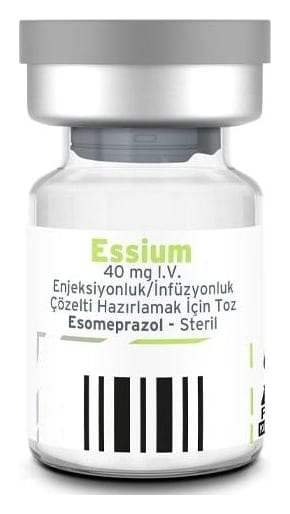

Essium 40 mg I.V. Enjeksiyonluk/İnfüzyonluk Çözelti Hazırlamak İçin Toz, 1 Adet

Ne için kullanılır
KT · Bölüm 1ESSİUM, esomeprazol adı verilen bir etkin madde içermektedir. ESSİUM “proton pompası inhibitörü” olarak bilinen ilaçlardan biridir. Midenizdeki asit oluşumunu azaltır. ESSİUM; ağız yoluyla tedavi edilemediğiniz belirli durumların kısa süreli tedavisi için kullanılır. ESSİUM; renksiz cam flakon içerisinde,beyazdan açık sarı renge kadar değişebilen renkte 40 mg esomeprazole eşdeğer 42,5 mg esomeprazol sodyum içerir. ESSİUM, ağızdan tedavi alamadığınız aşağıdaki durumların kısa süreli tedavisi için; Yetişkinlerde: • Gastroözofageal reflü hastalığı (GÖRH). Mide asidinin gırtlaktan (boğazınızı midenize bağlayan tüp) kaçmasına bağlı ağrı, iltihaplanma ve mide ekşimesinde. • NSAİİ (Steroid olmayan Anti-inflamatuvar İlaçlar) adı verilen ilaçların neden olduğu mide ülserleri. ESSİUM, NSAİİ kullanıyorsanız mide ve oniki parmak bağırsağı ülserlerinin oluşmasını durdurmak için de kullanılabilir.
• Akut kanamalı mide veya oniki parmak bağırsağı ülserleri için terapötik endoskopi sonrası tekrar kanamanın önlenmesinde.
1-18 yaş arası çocuklarda ve ergenlerde: • Gastroözofageal reflü hastalığı (GÖRH). Mide asidinin gırtlaktan (boğazınızı midenize bağlayan tüp) kaçmasına bağlı ağrı, iltihaplanma ve/veya reflünün ciddi semptomlarında kullanılır.